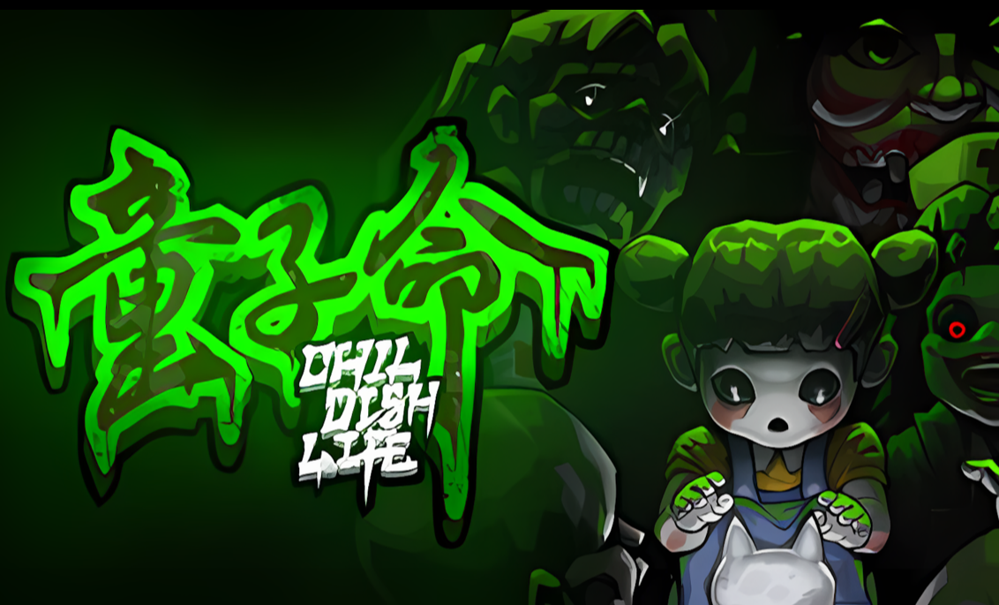
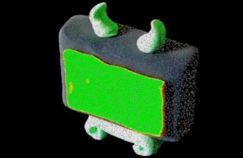
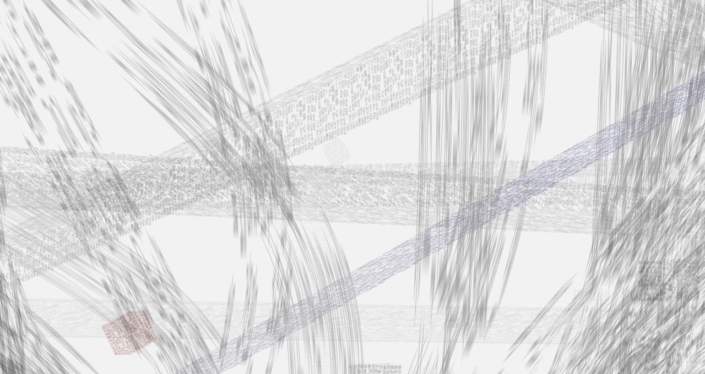
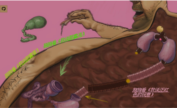

███████╗██╗███████╗██╗ ██╗██╗ ██╗███╗ ██╗██╗███╗ ██╗ ██████╗ ╚══███╔╝██║██╔════╝██║ ██║██║ ██║████╗ ██║██║████╗ ██║██╔════╝ ███╔╝ ██║███████╗███████║██║ ██║██╔██╗ ██║██║██╔██╗ ██║██║ ███╗ ███╔╝ ██║╚════██║██╔══██║██║ ██║██║╚██╗██║██║██║╚██╗██║██║ ██║ ███████╗██║███████║██║ ██║╚██████╔╝██║ ╚████║██║██║ ╚████║╚██████╔╝ ╚══════╝╚═╝╚══════╝╚═╝ ╚═╝ ╚═════╝ ╚═╝ ╚═══╝╚═╝╚═╝ ╚═══╝ ╚═════╝
About me
-> I am currently studying Software Engineering at South China Normal University.
-> I am a game developer, digital artist, and an independent scholar of game studies.
-> I am the lead programmer at Littleroot Studio, which developed Childish Life.
-> My work focuses on conceptual reflections and poetic experiences, existing at the intersection between art and games.
What I Do
-> Game Programming/ Game Development/ Game Studies
-> Unity/ Godot/ C#/ C++
-> Digital Art/ Philosophy/ Art History
-> Artificial Intelligence/ Software Engineering
-> User Research/ Market Research
Work Experience
-> Littleroot Studio | Lead programmer | 2023.03 - NOW
-> Hot Zone Network | Game Dev Intern | 2024.07 - 2024.09
-> Tencent Games | User Researcher Intern | 2022.10 - 2023.05
RGB
PROJECTS
Selected works 2021>>>2025
-
Reimagining UI Screens as Paratextual Narrative Spaces
Paper/ Reimagine utilitarian game elements in video games, such as Splash Screens, Loading Screens, and Main Menus, by using the concept of "paratext" introduced by French narratologist Gérard Genette, and introduces the concept of "Paratextual Spatial Narratives."/ accepted by the International Conference on Games and Narrative 2025 (ICGaN'25) in Waterloo, Canada
-
Childish Life: Prologue
A top-down horror game based on Chinese folklore/ 13k+ downloads on Steam
-
S p A c E
A philosophical metagame/ About the concept of "Space" within computer / GN! GameJam #15
-
Cantripped! And C2H5OC2H5
A set of tarot cards made with clay animation / Feinaki Beijing Animation Week
-
Book of Binary
This work is based on an e-book reading software that I use daily, with content drawn from Italo Calvino's Invisible Cities, while the name is inspired by Jorge Luis Borges' The Book of Sand. It discusses computer coding, cultural interaction interfaces, and more. As the viewer flips through the pages, the content gradually becomes bizarre, trembling, and constantly changing. The range of character changes includes all characters encoded in Unicode. Finally, once all characters have been traversed, the e-book will display a blank interface, serving as a monument to characters that have not been encoded by computers.
-
Wild Nights
Interactive poem/ "Wild Night" is a poem divided into three parts, interwoven with metaphors of lighthouses, sirens, and catches from the sea. It was created in collaboration with Ye Tao during a residency on an island in Hainan Province, China. The work explores the calls and responses between women in different circumstances (a woman offshore, a siren, and a fisherwoman). The interactive piece I designed further extends the expression of the text, inviting viewers to reveal words within a deep blue sea. The Unicode encoding of the text shifts with the ebb and flow of local astronomical tides. Over the two-month exhibition period, the text will be gradually eroded by the digital waves, transforming into a new form.
-
Rain, River, Bridge
A text flow generation machine, where all text flows are composed of three initial text segments: a poem by Haizi titled Blindness—To Wittgenstein, an excerpt from Edward Said's Orientalism, and a discussion about Chinese cultural traditions generated by ChatGPT 3.5. As the system operates, parts of the text from these three initial segments will shift based on their encoding in the computer, meaning their content and semantics will become increasingly chaotic over time. The style and color of the text flow will also inherit and change according to its content. These text flows aim to simulate the inevitable semantic shifts that occur in a symbolic system due to changes in time and space, as well as the randomness and violence of such shifts. Each flowing symbol segments space and claims territory, and in every blank area where they are absent, there lies the potential for their next position. This represents a form of aggression, but also a manifestation of freedom.
-
WO run on WO
One Chinese character representing 'I' runs on top of another Chinese character that represents 'I'.
Junk Drawer
-
The Wrong Human Absorption
Video Game/ We recreated the childhood game experiences of Where‘s My Water? and Cut the Rope with a dark humor art style. Players need to use various organs as tools, each with distinct functions, to successfully deliver food to the stomach.
-
Function Guardian

Video Game/ A tower defense game with a rubber hose art style. Players need to follow changes in track and place various weapons at the right time to prevent different enemies from reaching the center.
PICTURES
Here's a collection of photos I made with the open-source software Blender! Color-grading was done using Lightroom-Classic!


Here are some images I took in the USA!
Hover over them to view more information!

The famous Golden-Gate-Bridge! Was a bit cloudy that day, but that probably made it even better!

A chipmunk! We found them in a lot of different places. They were really friendly, weren't even scared of us, thus making photographing them pretty easy!

Nothing much to say here, but sometimes even the simple, minimalistic photos turn out quite cool!

We found this cool-looking bird! Fits well with the cloudy weather and the black stone, monochrome from nature!
All these were taken with a Panasonic Lumix DMC-TZ71, a surprisingly good travel camera for a low price.
Click on one of the pictures to see information about it, or visit my ArtStation profile. I'm also on Instagram!
neat things that inspired me⋆⭒°.⋆
- GAME -
Free
-> 时间的形状 The Shape of Time [link]
-> He Fucked The Girl Out of Me [link]
-> Coming Out Simulator 2014 [link]
-> 今天去看海吗（available in Chinese only） [link]
-> 好小狗行为手册（available in Chinese only） [link]
Paid
-> Dujanah [link]
-> Before Your Eyes [link]
-> Disco Elysium [link]
-> Devotion [link]
-> Inside [link]
-> The Beginner's Guide [link]
- TEXT & TALK -
-> The language of new media -- Lev Manovich
-> The Wretched of the Screen -- Hito Steyerl
-> Invisible Cities -- Italo Calvino
-> The Garden of Forking Paths -- Jorge Luis Borges
-> Alternative Game & Art Scenes -- TJ Thomas
-> Game Design as Narrative Architecture -- Henry Jenkins[link]
-> Real Talk: Games About Trauma -- Nathalie Lawhead[link]
-> MDA: A Formal Approach to Game Design and Game Research[link]
-> Videogames Are Poems -- Jordan Magnuson[link]
-> Truth in Game Design -- Jonathan Blow[link]
-> From Game-Story to Cyberdrama -- Janet Murray[link]
-> The Game of Love and Chance -- Paul Virilio[link]
-> "I Lose, Therefore I Think" A Search for Contemplation amid Wars of Push-Button Glare -- Shuen-shing Lee[link]
-> Videogames about self-care are exactly what we need right now -- Chris Priestman[link]
-> Philosophical Games -- Gualeni, Stefano[link]
-> Explorable Explanations -- Nicky Case[link]
-> Molleindustria Manifesto -- Paolo Pedercini[link]
-> Are games art school? How to teach game development when there are no jobs -- Brendan Keogh[link]
-> Over games -- Auriea Harvey & Michaël Samyn[link]
-> Winning Isn’t Everything -- Ian Bogost[link]
-> Videogames are a Mess -- Ian Bogost[link]
Blog
Home
★ Updated on AUGUST 8TH, 2024:
I am currently studying Software Engineering at South China Normal University. I am an game developer, digital artist, and an independent scholar of game studies. My works have been showcased at FEINAKI Beijing Animation Week and exhibited at the China International Cartoon and Game Expo (CCG Expo).
Email: nzs2579228376@gmail.com
Latest Updates
★ NOVEMBER 11TH, 2024: Adding collapsible sections to improve the experience on mobile devices, a lot of other small enhancements and new effects.